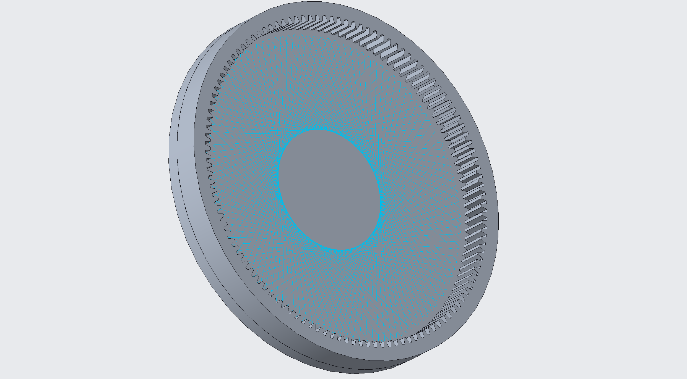
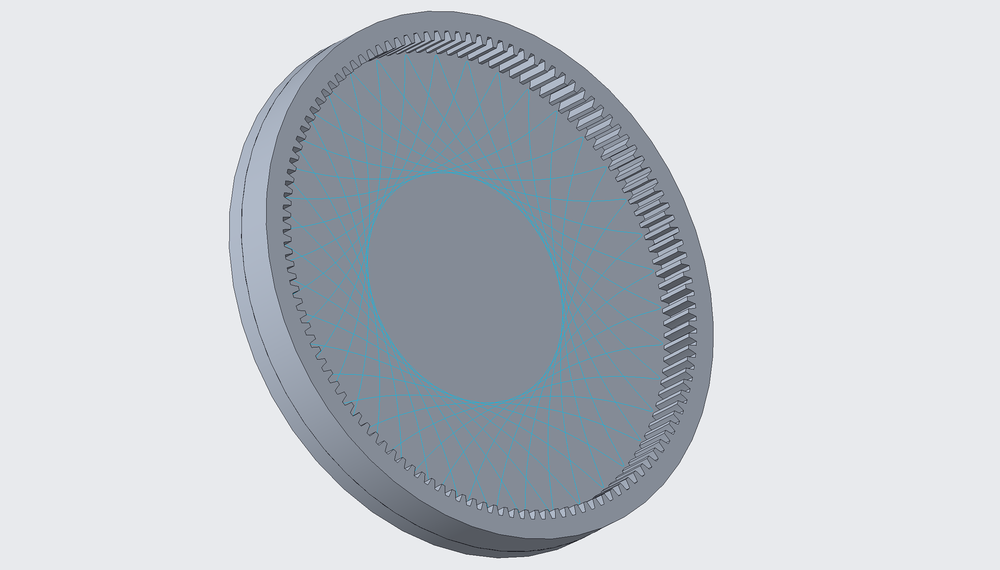
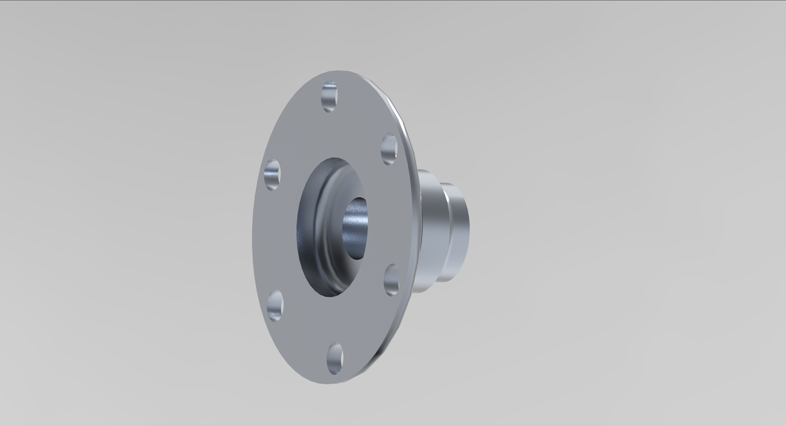
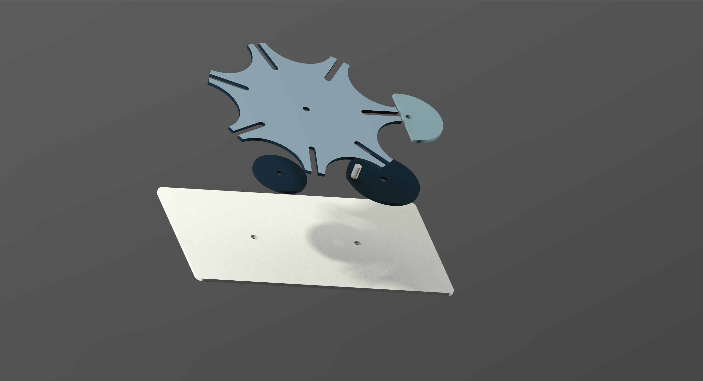
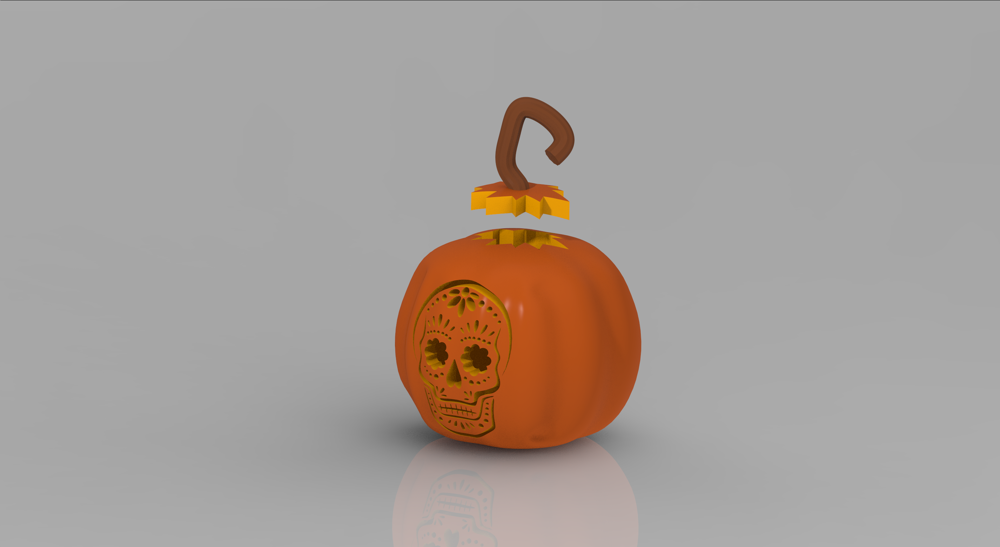
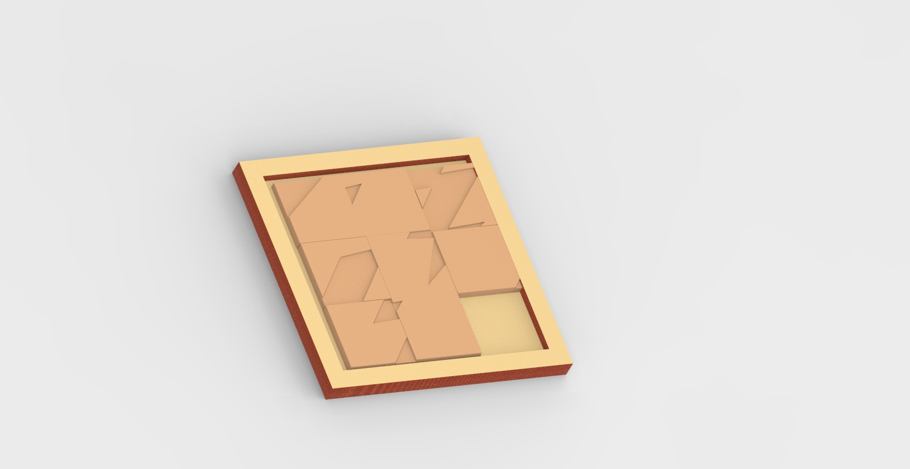

SPIROGRAPH
Who says math can't be pretty?
To recreate a spirograph, I started by modeling a spur gear and a ring gear. Using the relations tool, which allows you to create relationships between dimensions or variables (like the amount of teeth on a gear), was key to the success of this project. I followed a tutorial as a guide to create the spur gear. In order to show the path of the "pen" that moves as the spur gear travels along the ring gear, I created a datum point pattern on the spur gear and ran a mechanism analysis on a given point. I played around with the number of teeth on the ring and spur gear to create different patterns.

Fig. 01 - Rendered spirograph
Fig. 02 - Analysis of spirograph
Fig. 03 - Analysis of spirograph
ENDPLATE
Practicing tolerance.
I used an old textbook drawing to model this endplate. I was trying to incorporate the tolerance specified in the drawing to the 3D model. I then re-drew the drawing on the modeling software I was using (Creo Parametric) to get some practice working with the GD&T tools.
Fig. 04 - Endplate side view
Fig. 05 - Endplate front view
GENEVA
Not the convention.
The Geneva Cam was an opportunity for me to delve more deeply into the relations tool. This projects depended on relationships from both the part and the assembly level. I had difficulty grasping this concept in the beginning since creating features in the assembly required referencing features from multiple parts. After a while, I unsderstood how to assign relations while making features or sketches instead of trying to figure out the relationships after the part was complete. The most critical feature than can be changed within relations is the number of slots on the wheel. When creating the assembly, I had go into some of the parts to adjust the dimensions to allow for some clearence to prevent interference.
Fig. 06 - Geneva Cam assembly
Fig. 07 - Geneva Cam exploded view
GYROSCOPE
Bring it around town.
Gyroscope was a fun way to incorporate revolves, the pattern tool, different constraint connections, and a servo motor analysis. Initially, I had some trouble with the servo motor analysis; applying a gravity component would make the Gyroscope fall flat on it's side and rotate in a way that was not physically possible. My mistake was forgetting to define materials for all parts. I created an animation of the analysis but sadly, theres a bug in Creo that does not let you export animations.
Fig. 08 - Gyroscope assembly
JACK-O'-LANTERN
Oh my gourd!
I was experimenting with flexible/free modeling for this project. I played around with adjusting the resolution of the surface to manipulate the model in different ways. In the beginning, it was difficult to select the surface and manipulate it without changing the opposite side. I had to take things slow, and carefully adjust the sections I wanted until the sphere looked pumpkin-like. To create the stem, I used the style tool to create a curve that resembled a pumpkin stem and created a sweep along the curve. The shape of the sweep is a star, I thought it resembled a stem more than a perfect circle. I used a calavera image to create the sketch that would become the face of the Jack-O-Lantern. A shoutout to Mexican culture, which I find super beautiful.
Fig. 09 - Jack-o-lantern
Fig. 10 - Jack-o-lantern exploded view
SLIDER
It's electric.
The slider game was a fun project to explore some in depth functionality of Creo. I played around with part repetition which allowed me to repeat a single part instead of creating 9 seperate tile parts. This project also taught me about defining part behavior by enabaling push upon collision to prevent the tiles from overlapping when moving them around the base. I used the boolean operation to cut the lightning bolt out of the tiles. I chose a lightning bolt for the image because, well, you know. This is the first project I've made that will be brought to life. I'll be using a laser cutter to create this wooden slider game!
Fig. 11 - Slider puzzle solved
Fig. 12 - Slider puzzle unsolved